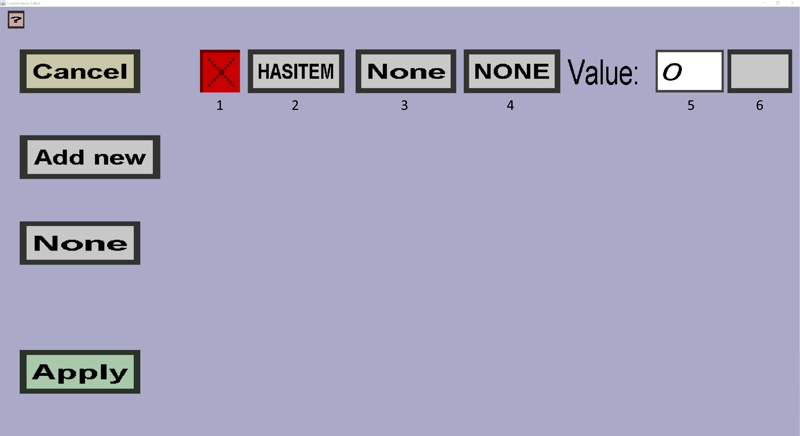

This page describes the possible conditions for replacing an item on a right click. The image below shows how this menu would probably look like if it would exist:
This 'menu' contains a 'Cancel' button, an 'Apply' button, an 'Add New' button and a 'Operator' button.
Clicking the 'Cancel' button will bring you back to the base item edit menu without saving the conditions.
Clicking the 'Apply' button will run a lot of validation checks to make sure everything is ok. If so, it will apply all changes made and then bring you back to the base item edit menu.
Clicking the 'Add New' button will create a new entry for the conditions to be checked when right clicking an item, to see whether it may be replaced or not. Each added entry will have the default values at first, which are useless if not altered.
The 'Operator' button (shown in the figure above as 'None') determines how multiple conditions are treated together. Possible values include 'None', 'AND' and 'OR'. The 'None' operator does not add anything special, ensuring that each condition is checked from top to bottom. This operator is the only operator that allows items to be replaced with a different item per condition. The 'AND' operator will only allow an item to be replaced if all the conditions are true at the same time. This condition requires that each condition replaces the item with the same item. So condition #1 must replace the current item with the same item as condition #2 and condition #3. The 'OR' operator allows an item to be replaced if any of the conditions are true. So if condition #2 is true, then it will execute the replacement, even if condition #1 is false. This operator also requires that each condition replaces the item with the same item.
Each entry consists out of 6 buttons, described below. In the above figure, each button has a number underneath the button, so it is easier to explain what the button does.
The 'Remove' button, indicated with a red X (with the number 1 in the figure), will remove the entry from the list. Pressing this button cannot be undone so any settings you configure in this entry will be removed when you press the X.
The 'Condition operator' button, with the number 2 in the figure, decides what to do with the item specified in the item button. This button has three possible values: 'HASITEM', 'MISSINGITEM' and 'ISBROKEN'. 'HASITEM' requires the item specified in the 'Condition Item' box to be present in the player's inventory. 'MISSINGITEM' is the opposite of 'HASITEM' where it requires that the player's inventory contains no copy of the specified item. Lastly the 'ISBROKEN' condition will only trigger when the item has been fully used up, which is only applicable to tools.
The 'Condition Item' button, with the number 3 in the figure, is the item that the 'Condition operator' uses for the 'HASITEM' and 'MISSINGITEM' operators. This item may only be a custom item and can be selected by clicking on the button which will open the item selection menu, which is similar to the custom item ingredient selection menu.
The 'Replacement operator' button, with the number 4 in the figure, decides what will be done with the item count value. The possible options include: 'ATMOST', 'ATLEAST', 'EXACTLY' and 'NONE'. All of these options are only relevant when the 'HASITEM' condition operator is selected, otherwise it is ignored. 'ATMOST' specifies that there may be any number between 0 and item count (including) number of condition items in the player's inventory. 'ATLEAST' is the opposite, requiring more than (and including) item count of condition items in the player's inventory. 'EXACTLY' means that the player may have no more and no less than item count of condition items in its inventory. 'NONE' behaves the same as 'ATLEAST' with item count 1.
The 'Item count' value, with the number 5 in the figure, contains the amount of items that is used together with the replacement operator. This number must be between 0 and the maximum amount of custom items that may fit in the player's inventory (depending on the stack size of the Condition item), otherwise the condition will never become true which is problematic if you use the 'AND' operator.
The 'Replacing item' button, with the number 6 in the figure, decides what item you get when you right click, if the condition is true at the moment of right clicking. In the case of the 'AND' and 'OR' operators, all conditions must have the same item in this button. In the case of 'NONE' you may have conditions with different Replacing items. Clicking the button will open up a menu similar to the custom item ingredient selection menu. At the moment only custom items may be used here.